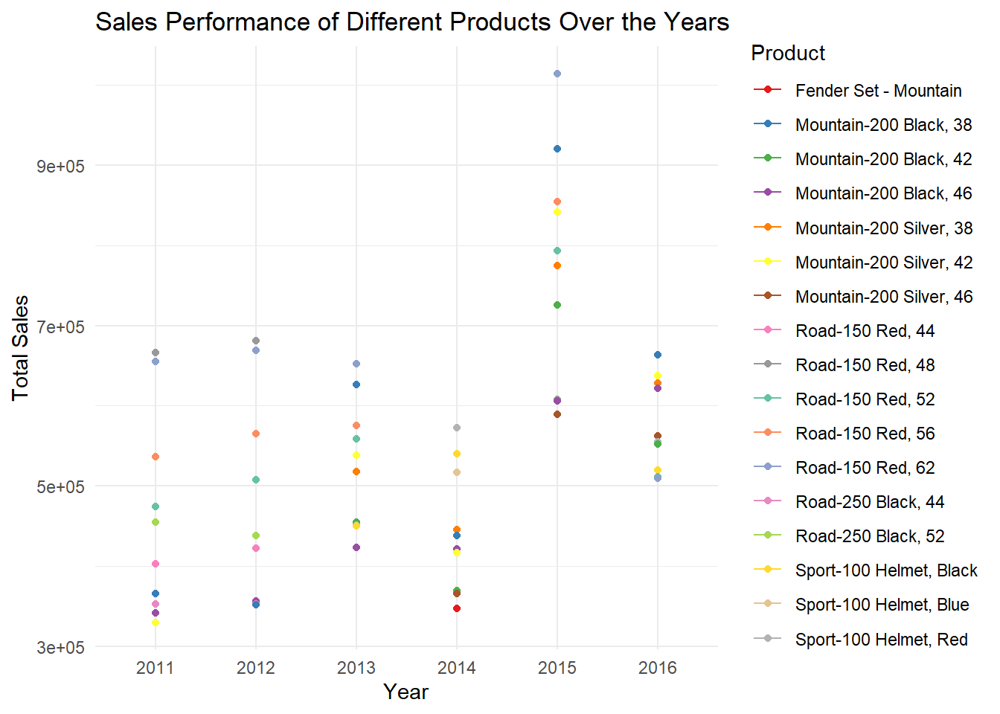
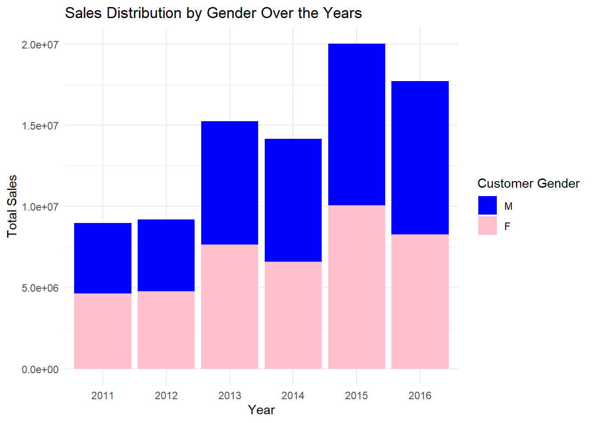
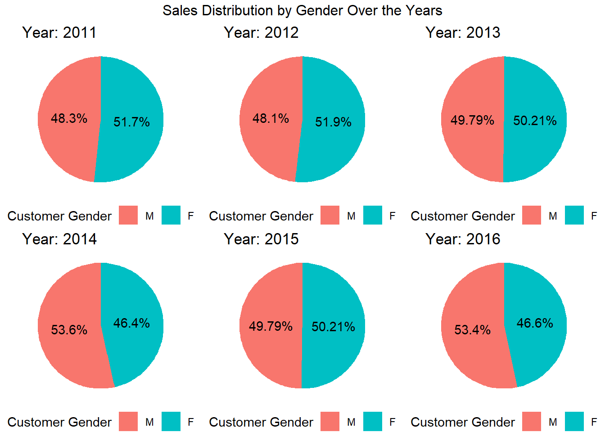
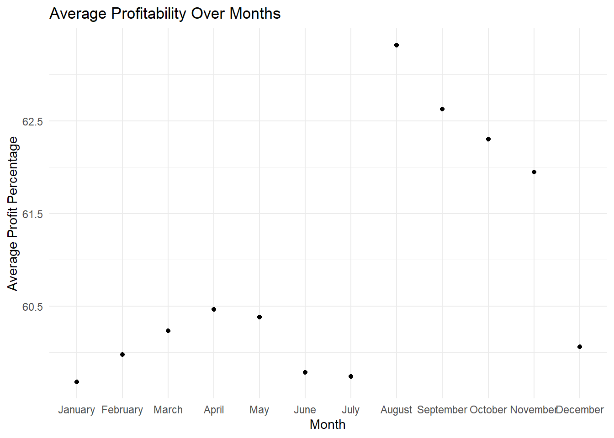
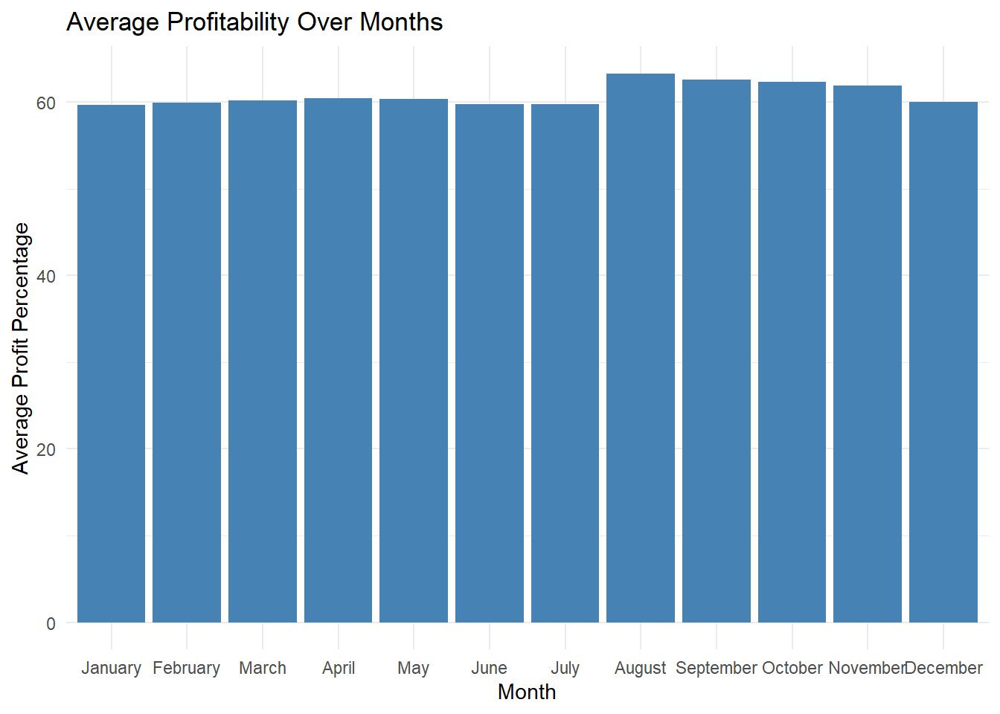
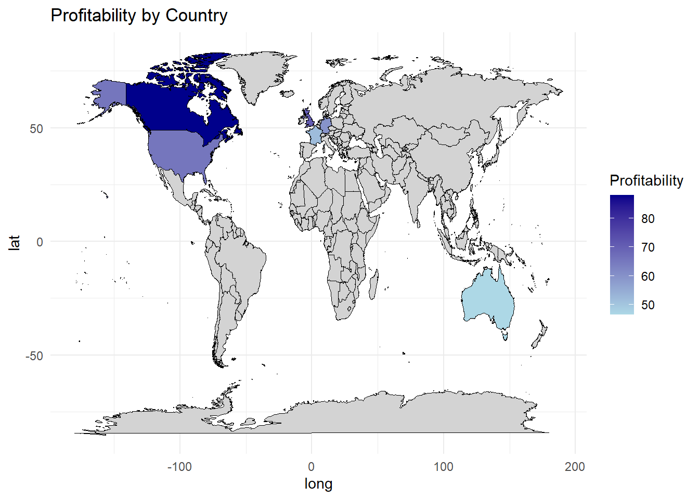
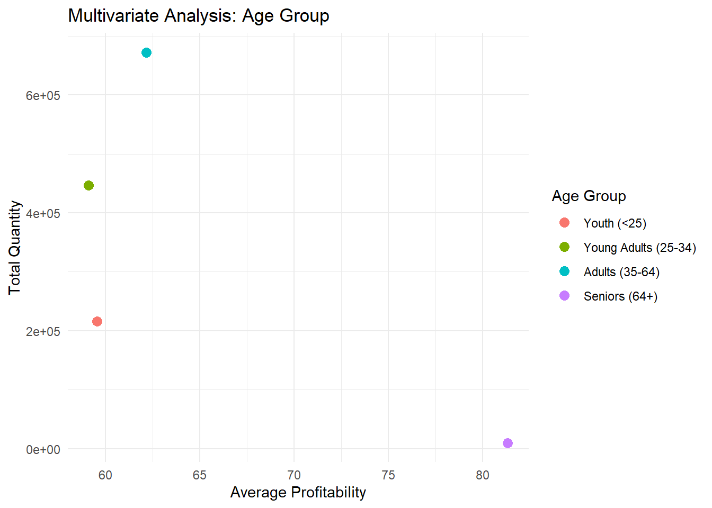
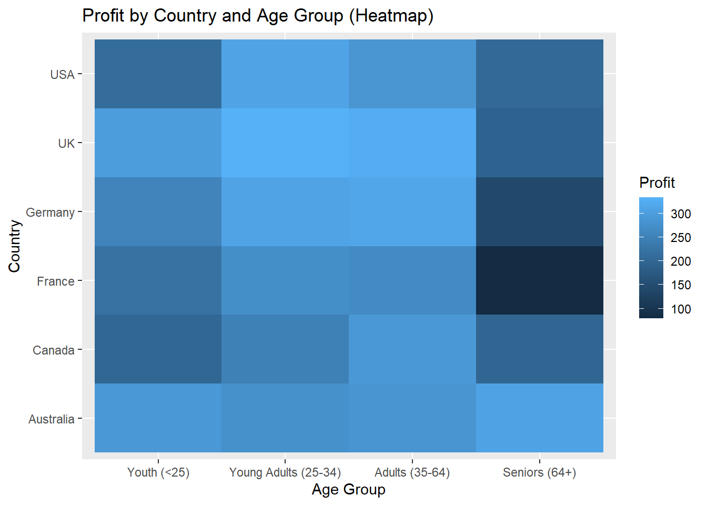
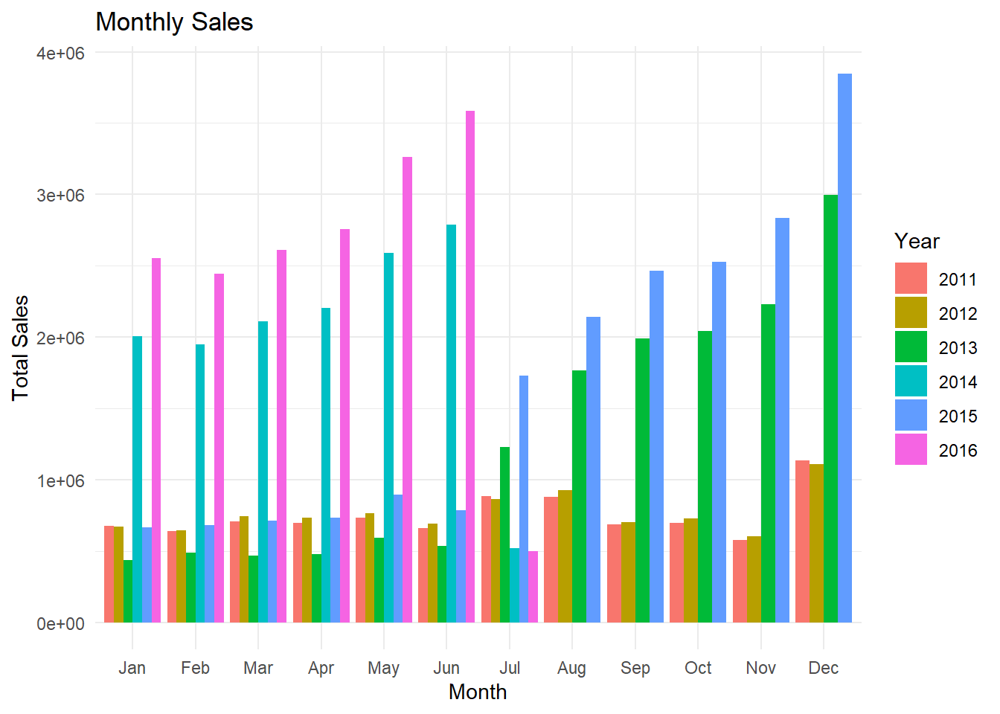
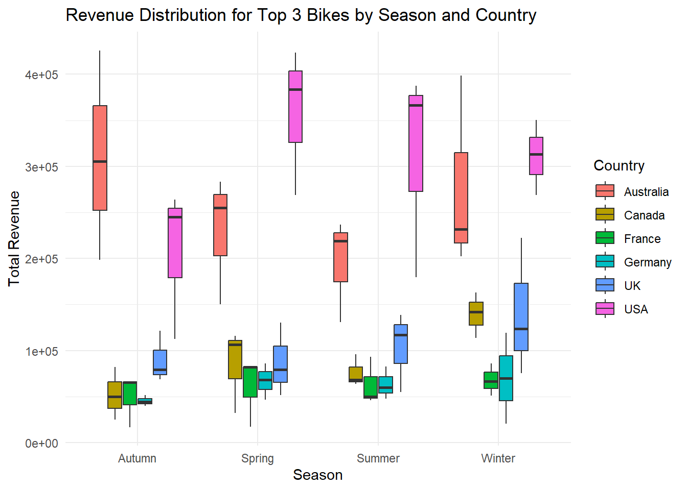

Code
library(maps)
library(tidyverse)
library(readxl)
library(ggplot2)
library(lubridate)
library(gridExtra)
knitr::opts_chunk$set(echo = TRUE, warning=FALSE, message=FALSE)Harsha Kanaka Eswar Gudipudi
May 22, 2023
The dataset used in this analysis was collected by the Global Bike Inc., a leading manufacturer and retailer of bicycles worldwide. The dataset provides comprehensive information on bike sales, customer demographics, and profitability across multiple countries.
The dataset includes data on various aspects, such as sales transactions, customer information, product details, and financial records. Each row in the dataset represents a specific sales transaction, providing details about the customer, the purchased product, the country of sale, and other relevant information.
The dataset was collected over a period of several years, encompassing different seasons and economic conditions. The collection process involved tracking sales data from various Global Bike retail locations and online channels, as well as gathering customer feedback and preferences.
Based on this dataset, the following research questions will be explored:
By addressing these research questions, we aim to gain insights into the sales performance, customer preferences, and profitability patterns within the bike industry. These findings will help inform decision-making processes related to marketing strategies, inventory management, and product development, ultimately leading to improved business performance and customer satisfaction.
[1] 113036 18 Date Day Month Year
Min. :2011-01-01 Min. : 1.00 Length:113036 Min. :2011
1st Qu.:2013-12-22 1st Qu.: 8.00 Class :character 1st Qu.:2013
Median :2014-06-27 Median :16.00 Mode :character Median :2014
Mean :2014-11-23 Mean :15.67 Mean :2014
3rd Qu.:2016-01-09 3rd Qu.:23.00 3rd Qu.:2016
Max. :2016-07-31 Max. :31.00 Max. :2016
Customer_Age Age_Group Customer_Gender Country
Min. :17.00 Length:113036 Length:113036 Length:113036
1st Qu.:28.00 Class :character Class :character Class :character
Median :35.00 Mode :character Mode :character Mode :character
Mean :35.92
3rd Qu.:43.00
Max. :87.00
State Product_Category Sub_Category Product
Length:113036 Length:113036 Length:113036 Length:113036
Class :character Class :character Class :character Class :character
Mode :character Mode :character Mode :character Mode :character
Order_Quantity Unit_Cost Unit_Price Profit
Min. : 1.0 Min. : 1.0 Min. : 2.0 Min. : -30.0
1st Qu.: 2.0 1st Qu.: 2.0 1st Qu.: 5.0 1st Qu.: 29.0
Median :10.0 Median : 9.0 Median : 24.0 Median : 101.0
Mean :11.9 Mean : 267.3 Mean : 452.9 Mean : 285.1
3rd Qu.:20.0 3rd Qu.: 42.0 3rd Qu.: 70.0 3rd Qu.: 358.0
Max. :32.0 Max. :2171.0 Max. :3578.0 Max. :15096.0
Cost Revenue
Min. : 1.0 Min. : 2.0
1st Qu.: 28.0 1st Qu.: 63.0
Median : 108.0 Median : 223.0
Mean : 469.3 Mean : 754.4
3rd Qu.: 432.0 3rd Qu.: 800.0
Max. :42978.0 Max. :58074.0 Canada, Australia, United States, Germany, France, United Kingdom# Check for NA values in the dataset
na_values <- apply(data, 2, function(x) any(is.na(x)))
# Check for empty values in the dataset
empty_values <- apply(data, 2, function(x) any(x == ""))
# Combine NA and empty value checks
missing_values <- na_values | empty_values
# Print the columns with missing values
cat("Columns with missing values:\n")Columns with missing values:character(0)# Convert country names
data$Country[data$Country == "United States"] <- "USA"
data$Country[data$Country == "United Kingdom"] <- "UK"
data <- data %>%
mutate(Year = factor(Year),
Month = factor(Month, levels = month.name),
Age_Group = factor(Age_Group, levels = c("Youth (<25)", "Young Adults (25-34)", "Adults (35-64)", "Seniors (64+)")),
Customer_Gender = factor(Customer_Gender, levels = c("M", "F")),
Profit_Percentage = (Profit / Cost) * 100)
head(data)The dataset used for this analysis contains information about bike sales. Each row in the dataset represents a specific bike sale transaction. The dataset includes several variables that provide insights into different aspects of the sales process and customer behavior.
One of the key variables in the dataset is “Product,” which represents the specific bike product sold. The dataset includes a total of [insert number of unique products] unique bike products. Each bike product has its own characteristics, such as brand, model, and type, which are not explicitly mentioned in this dataset.
Another important variable is “Quantity,” which indicates the number of bikes sold in each transaction. This variable allows us to analyze the sales volume and identify the most popular bike products.
Additionally, the dataset includes the “Profit” variable, which represents the profit generated from each bike sale. By examining the summary statistics for the “Profit” variable, including measures such as minimum, maximum, mean, and median, we can gain insights into the overall profitability of the bike sales.
The dataset has 18 Columns and it comprises 113,036 records spanning from January 2011 to July 2016. The customers’ ages range from 17 to 87 years, with an average age of approximately 35.92 years.
These statistics provide a high-level overview of the dataset and give us a sense of the range and distribution of the “Quantity” and “Profit” variables. However, it is important to note that these summary statistics do not capture the full complexity of the dataset, and further analysis is needed to explore relationships between variables and uncover more detailed insights.
By focusing on these key variables, we can gain valuable insights into the sales performance, customer preferences, and profitability of bike sales. To prepare the data for analysis, the following steps were performed:
The analysis explores the sales performance of different bike products over the years. By examining the trends and fluctuations in the total sales of the top-selling products, we gain insights into their popularity and identify high-performing products. This information is valuable for making data-driven decisions related to marketing strategies, inventory management, and product development. The graph visualizes the sales performance of different products over the years, highlighting the top-selling products in each year
# Top 10 selling products per year
library(RColorBrewer)
sales_by_year <- data %>%
group_by(Year, Product) %>%
summarise(Total_Sales = sum(Revenue)) %>%
arrange(desc(Total_Sales)) %>%
group_by(Year) %>%
top_n(n = 10)
n_colors <- n_distinct(sales_by_year$Product)
palette1 <- brewer.pal(n_colors, name = "Set1")
palette2 <- brewer.pal(n_colors, name = "Set2")
# Plotting sales performance over the years for multiple products
ggplot(sales_by_year, aes(x = Year, y = Total_Sales, color = Product)) +
geom_line() +
geom_point() +
labs(title = "Sales Performance of Different Products Over the Years",
x = "Year",
y = "Total Sales",
color = "Product") +
theme_minimal() +
scale_color_manual(values = c(palette1, palette2) , name = "Product")
The data is grouped by the “Year” and “Product” variables using the group_by() function.The summarise() function is applied to calculate the sum of the “Revenue” variable, resulting in the total sales for each combination of year and product.The data is then arranged in descending order based on the “Total_Sales” variable using the arrange() function.Next, the data is grouped again by the “Year” variable using group_by() to prepare for selecting the top 10 rows for each year.Finally, the top_n() function is used to retain only the top 10 rows for each year, based on the highest total sales.
The graph above showcases the sales performance of different products over the years. Each product is represented by a unique color, brewer.pal() is used to get distint colors allowing for easy differentiation. Analyzing the sales performance over the years, we observe trends and fluctuations in the total sales of top ten products. We can see Road 150 Red,48 is the top selling bike in the year 2011, 2012 followed by Road 150 Red, 62 and Road 150 Red, 56. In the following years 2013, Road 150 Red, 62 became the top seller. The sales of Road 150 Red, 62 Skyrocketed in 2015 generating vast revenue exceeding 900 thousand usd.
The analysis focuses on the sales distribution by gender over the years. By examining the proportion of sales for each gender, we can understand the gender preferences and identify any variations in sales patterns. The visualization showcases the sales distribution by gender using stacked bar charts. The segments within the bars represent the proportion of sales for each gender, allowing us to compare the sales distribution between males and females. The consistent percentage of sales between the two genders suggests a relatively equal appeal and demand for bikes among both male and female customers.
# Sales distribution by gender over the years
sales_by_gender <- data %>%
group_by(Year, Customer_Gender) %>%
summarise(Total_Sales = sum(Revenue))
# Plotting sales distribution by gender over the years
ggplot(sales_by_gender, aes(x = Year, y = Total_Sales, fill = Customer_Gender)) +
geom_bar(stat = "identity", position = "stack") +
labs(title = "Sales Distribution by Gender Over the Years",
x = "Year",
y = "Total Sales",
fill = "Customer Gender") +
theme_minimal() +
scale_fill_manual(values = c("M" = "blue", "F" = "pink"))
In the code above, we calculate the total sales for each gender and year by grouping the data and creating Total_sales by summing up the Revenue. Then, we plot the sales distribution using a stacked bar chart, where each bar represents the total sales for each year, and the segments within the bars represent the sales distribution by gender.
# Function to create pie chart
create_pie_chart <- function(year) {
sales_by_gender_year <- sales_by_gender %>%
filter(Year == year)
pie_chart <- ggplot(sales_by_gender_year, aes(x = "", y = Total_Sales, fill = Customer_Gender)) +
geom_bar(stat = "identity", width = 1) +
coord_polar("y", start = 0) +
labs(fill = "Customer Gender") +
theme_void() +
theme(legend.position = "bottom") +
geom_text(aes(label = scales::percent(Total_Sales / sum(Total_Sales))),
position = position_stack(vjust = 0.5)) +
ggtitle(paste("Year:", year))
return(pie_chart)
}
# Create a list of pie charts for each year
pie_charts <- lapply(unique(sales_by_gender$Year), create_pie_chart)
# Combine pie charts into a grid
grid <- grid.arrange(grobs = pie_charts, ncol = 3, top = "Sales Distribution by Gender Over the Years")
In the code above, we define a function create_pie_chart that takes a year as input and creates a pie chart representing the sales distribution by gender for that specific year.We then use lapply to apply the create_pie_chart function to each unique year in the sales_by_gender dataset, resulting in a list of pie charts for each year. Finally, we use the grid.arrange function from the gridExtra package to combine the pie charts into a grid layout with three columns (adjust the ncol parameter as desired). The resulting grid is stored in the grid variable.
As we can see from the above grid of pie charts that the percentage of sales each year is almost the same for both males and females, it implies that there is a relatively equal distribution of sales between the two gender groups. This can suggest that the bikeshas similar appeal and demand among both male and female customers.
The analysis delves into the profitability of bike sales by month. By calculating the average profit percentage for each month, we can identify any seasonal patterns or fluctuations in profitability. The visualization presents the average profitability over months, providing insights into the overall profitability trends throughout the year. Analyzing the graph helps us understand if there are any specific months that contribute significantly to profitability or if bike sales maintain consistent profitability across all months.
# Calculate average profit percentage by month
profitability_month <- data %>%
group_by(Month) %>%
summarise(Avg_Profit_Percentage = sum(Profit) / sum(Cost)*100)
# Plot average profit percentage over months
month_plot <- ggplot(profitability_month, aes(x = Month, y = Avg_Profit_Percentage)) +
geom_point() +
labs(title = "Average Profitability Over Months",
x = "Month",
y = "Average Profit Percentage") +
theme_minimal()
# Display the plot
month_plot
# Plot average profit percentage over months
month_plot <- ggplot(profitability_month, aes(x = Month, y = Avg_Profit_Percentage)) +
geom_bar(stat = "identity", fill = "steelblue") +
labs(title = "Average Profitability Over Months",
x = "Month",
y = "Average Profit Percentage") +
theme_minimal()
# Display the plot
month_plot
In the code above, we group by month to calculate the average profit percentage for each month using summarise() function. Then, we create geom_bar() to create a bar plot to visualize the trend of average profit percentage over months. It can be seen that bike sales in overall are consistent around 60 percent profit for each month. Which implies that the bike sales are not largely effected by the month.
The analysis investigates the profitability of bike sales among different countries. By calculating the average profitability for each country, we can identify variations in profitability levels and potentially uncover factors that contribute to these differences. The visualization utilizes a world map to represent the profitability by country. Each country is shaded according to its average profitability, allowing for easy identification of regions with higher or lower profitability. This information helps in understanding the geographic distribution of profitability and making informed decisions related to market targeting and expansion strategies.
# Calculate average profitability by country
profitability_country <- data %>%
group_by(Country) %>%
summarise(Avg_Profitability = sum(Profit)/sum(Cost)*100)
# Plot world map based on profitability
world_map <- map_data("world")
world_plot <- ggplot() +
geom_map(data = world_map, map = world_map,
aes(x = long, y = lat, map_id = region),
fill = "lightgray", color = "black", size = 0.2) +
geom_map(data = profitability_country, map = world_map,
aes(fill = Avg_Profitability, map_id = Country),
color = "black", size = 0.2) +
labs(title = "Profitability by Country",
fill = "Profitability") +
scale_fill_gradient(low = "lightblue", high = "darkblue") +
theme_minimal()
# Display the world map
world_plot
In this code, we first calculate the average profitability by country using summarise() function. Then, we use the map_data() function from the maps package to obtain the map data for the world. The geom_map() function is used twice to plot the world map: first to create a base map with light gray color, and then to overlay the profitability data using the fill aesthetic to represent the average profitability by country.
By executing this code, you will see a world map that visualizes the profitability by country. Each country is shaded according to its average profitability, with a gradient scale from light blue to dark blue indicating the profitability levels. This map provides an overview of the profitability distribution across different countries, allowing for easy identification of regions with higher or lower profitability.
On an average over the years we can see the Canada is having the highest profitability above 80 percent standing in the top while Australia making the least profitability around 50 percent. United states stands in the second place followed by United Kingdom and France.
The analysis explores the relationship between age group and bike sales profitability and quantity. By grouping the data based on age groups, we calculate the average profitability and total quantity for each group. The visualization presents a scatter plot that represents the multivariate analysis, with the x-axis indicating the average profitability and the y-axis indicating the total quantity. Each data point is color-coded based on the age group. Analyzing the scatter plot helps us understand any patterns or correlations between age group, profitability, and quantity. This information can be useful in tailoring marketing strategies and product offerings to specific age groups and maximizing profitability.
# Multivariate analysis using Age_Group
age_group_analysis <- data %>%
group_by(Age_Group) %>%
summarise(Avg_Profitability = sum(Profit)/sum(Cost)*100,
Total_Quantity = sum(Order_Quantity))
# Plotting multivariate analysis
age_group_plot <- ggplot(age_group_analysis, aes(x = Avg_Profitability, y = Total_Quantity, color = Age_Group)) +
geom_point(size = 3) +
labs(title = "Multivariate Analysis: Age Group",
x = "Average Profitability",
y = "Total Quantity",
color = "Age Group") +
theme_minimal()
# Display the plot
age_group_plot
In this code, we use the group_by() for each age group and summarise() to calculate the average profitability (Avg_Profitability) and the total quantity (Total_Quantity). Then, we use ggplot() and geom_point() to create a scatter plot where the x-axis represents the average profitability, the y-axis represents the total quantity, and the points are colored based on the age group. By executing this code, we will see a scatter plot that illustrates the multivariate analysis using the “Age_Group” variable. Each point represents an age group, and its position on the plot shows the average profitability and total quantity associated with that age group. This analysis helps identify any patterns or relationships between age groups and their impact on profitability and quantity.
we can conclude form the plot that the order quantity is highest in the Adults aged between 35-64 followed by young adults between 25-34. The sales of bikes is least for the seniors above 64 age. Even though sales are less profitability of the seniors is high suggesting that seniors purchased costly bikes or bikes where profit margin is high.
The analysis examines the mean profit generated by bike sales across different countries and age groups. By calculating the average profit for each country and age group, we gain insights into the profitability levels based on these two variables. The visualization presents the mean profit by country and age group using a heatmap. Each cell in the heatmap represents the average profit for a specific combination of country and age group. The color intensity of each cell indicates the level of profitability, allowing for easy comparison and identification of countries and age groups with higher or lower mean profits. This information helps in understanding the profitability dynamics across different countries and age groups, enabling targeted marketing and business strategies.
library(reshape2)
library(ggplot2)
# Reshape data for heatmap analysis
heatmap_data <- data %>%
select(Country, Age_Group, Profit)
heatmap_data <- heatmap_data %>%
dcast(Country ~ Age_Group, value.var = "Profit", mean)
# Create a heatmap to analyze Profit by Country and Age Group
heatmap_analysis <- ggplot(melt(heatmap_data, id.vars = "Country"),
aes(x = variable, y = Country, fill = value)) +
geom_tile() +
labs(title = "Profit by Country and Age Group (Heatmap)",
x = "Age Group",
y = "Country",
fill = "Profit")
# Display the heatmap analysis
heatmap_analysis
This code reshapes the data and creates a heatmap to analyze the Profit by Country and Age Group. The “heatmap_data” dataframe is created by selecting the “Country,” “Age_Group,” and “Profit” columns from the “data” dataset. The “heatmap_data” dataframe is further modified using the dcast() function from the “reshape2” library. The dcast() function reshapes the data, pivoting it to have “Country” as rows, “Age_Group” as columns, and the average “Profit” as the values in the cells.The resulting reshaped dataframe, “heatmap_data,” is then used to create a new ggplot object called “heatmap_analysis.” The heatmap provides a visual representation of the Profit values per unit, with colors indicating the intensity of Profit for different combinations of Country and Age Group.
The analysis focuses on tracking the monthly sales performance over the years. By examining the sales figures for each month, we can identify any seasonal patterns, trends, or fluctuations in sales. The visualization presents the monthly sales data using a bar graph, where each bar represents the sales for a specific month. The height of each bar indicates the sales amount, allowing for easy comparison between different months and years. Analyzing the bar graph helps us understand the overall sales trends over time and can provide insights for forecasting future sales, identifying peak periods, and optimizing inventory management.
# Calculate monthly sales
monthly_sales <- data %>%
group_by(Month, Year) %>%
summarise(Total_Sales = sum(Revenue)) %>%
arrange(desc(Month))
# Create a bar plot for monthly sales
monthly_sales_plot <- ggplot(monthly_sales, aes(x = Month, y = Total_Sales, fill = Year)) +
geom_bar(stat = "identity", position = "dodge") +
labs(title = "Monthly Sales",
x = "Month",
y = "Total Sales",
fill = "Year") +
theme_minimal()+
scale_x_discrete(labels = function(x) substr(x, 1, 3))
# Display the monthly sales bar plot
monthly_sales_plot
By grouping the data by month and year and summarizing the revenue, the code generates a new data frame that provides the total sales for each unique combination of month and year in the original dataset. In the plot, I used the substr() function within the scale_x_discrete() function to modify the x-axis labels. The substr(x, 1, 3) extracts the first three letters of each label, effectively truncating the month names. A bar plot is then created to visualize the monthly sales, with each bar representing the total sales for a specific month and year. The bars are color-coded based on the year, providing a visual comparison between different years. In 2016 Janaury to June is the peak selling season for the bikes on contrast in 2015 the sales are peak during July to August. In 2011 the sales are same overall through January to December and it is the least sales year out of all the years from 2011 to 2016.
The analysis examines the seasonal sales patterns of the top 3 bike products across different countries. By analyzing the sales data for each season and country, we can identify variations in demand and popularity throughout the year. The visualization utilizes a boxplot to represent the seasonal sales for each country and bike product. The boxplot provides insights into the distribution of sales, including the median, quartiles, and any outliers. By comparing the boxplots across countries and bikes, we can identify countries with high or low sales during specific seasons for the top 3 bikes.
# Filter the data for the top 3 bikes based on overall sales
top3_bikes <- data %>%
group_by(Product) %>%
summarise(Total_Sales = sum(Revenue)) %>%
top_n(3, Total_Sales) %>%
select(Product)
# Create a new column for seasons based on the date
data$Season <- ifelse(format(data$Date, "%m") %in% c("12", "01", "02"), "Winter",
ifelse(format(data$Date, "%m") %in% c("03", "04", "05"), "Spring",
ifelse(format(data$Date, "%m") %in% c("06", "07", "08"), "Summer", "Autumn")))
# Group the data by seasons, country, and bike product
grouped_data <- data %>%
filter(Product %in% top3_bikes$Product) %>%
group_by(Season, Country, Product) %>%
summarise(Total_Revenue = sum(Revenue))
# Filter the data to include only the top 3 bikes based on total revenue
top3_grouped_data <- grouped_data %>%
group_by(Season, Country) %>%
arrange(desc(Total_Revenue)) %>%
slice(1:3)
# Create a box plot to visualize the revenue distribution for each season, country, and bike
boxplot <- ggplot(top3_grouped_data, aes(x = Season, y = Total_Revenue, fill = Country)) +
geom_boxplot() +
labs(title = "Revenue Distribution for Top 3 Bikes by Season and Country",
x = "Season",
y = "Total Revenue",
fill = "Country") +
theme_minimal()
# Display the box plot
boxplot
The format(data$Date, “%m”) extracts the month from the “Date” column using the format() function with the “%m” format specifier. This will return a two-digit representation of the month (e.g., “01” for January, “02” for February, etc.). %in% c(“12”, “01”, “02”) checks if the extracted month value is equal to any of the values in the vector “c(”12”, “01”, “02”)“. If it matches any of these values, it indicates that the month falls within the winter season. similarly for other seasons used ifelse() statement.
After the seasons extracted from the date column, created a box plot to visualize the revenue distribution across different seasons. Each box plot represents the revenue distribution for a specific season, providing insights into the seasonal variations in sales. In each box plot top 3 sales are considered for the season showing how closely the competition is present in the market. In Australia, If we see in the winter season top bike in the sales is has no close competition with others. For the Canada there is always a close competition in the sales.
In this analysis, we explored a comprehensive dataset on bike sales collected by Global Bike Inc. The dataset provided valuable insights into sales transactions, customer demographics, and profitability across multiple countries. By addressing a set of research questions, we gained insights into the sales performance, customer preferences, and profitability patterns within the bike industry.
Based on our analysis, we found the following key findings:
Top-selling Bike Models and Sales Trends: We identified the top-selling bike models and observed their sales trends over the years. The Road 150 Red, 62 model emerged as a consistent top performer, generating significant revenue in multiple years.
Gender Distribution and Preferences: The analysis of gender distribution among bike customers revealed a relatively equal distribution of sales between male and female customers. This suggests that the bike products have similar appeal and demand among both genders.
Profitability Variation by Month: We examined the profitability variation by month and found that bike sales maintained a consistent profitability level around 60 percent throughout the year. This indicates that bike sales are not significantly influenced by the month.
Profitability Variation Among Countries: We analyzed the profitability across different countries and identified variations in profitability levels. Canada stood out as the highest-profitability country, while Australia had the lowest profitability. The United States, the United Kingdom, and France also exhibited notable profitability levels.
Age-specific Preferences: The multivariate analysis revealed insights into age-specific preferences. We observed that the youth and young adult age groups showed higher average profitability, indicating potential opportunities for targeted marketing and product development.
These findings provide valuable insights for decision-making processes related to marketing strategies, inventory management, and product development within the bike industry. By understanding the top-selling models, gender distribution, profitability patterns, and age-specific preferences, businesses can make data-driven decisions to improve performance and enhance customer satisfaction.
It is important to note that this analysis is based on the available dataset and its limitations. Further research and analysis can be conducted to delve deeper into specific aspects of bike sales, such as customer segmentation, marketing campaign effectiveness, and competitive analysis.
Overall, this analysis offers a comprehensive understanding of bike sales, customer preferences, and profitability patterns, enabling businesses to make informed decisions and drive growth in the bike industry.
Bike sales Dataset (2011-2016) - https://www.kaggle.com/datasets/sadiqshah/bike-sales-in-europe?datasetId=889310&language=R
R Language as programming language
Wickham, H., & Grolemund, G. (2016). R for data science: Visualize, model, transform, tidy, and import data. OReilly Media.
The R Graph Gallery-https://r-graph-gallery.com/
---
title: "DACSS601: Final Paper"
author: "Harsha Kanaka Eswar Gudipudi"
description: "Bike Sales"
date: "05/22/2023"
output: distill::distill_article
format:
html:
df-print: paged
toc: true
code-copy: true
code-fold: true
code-tools: true
css: styles.css
categories:
- bike_sales_data
- final_project_data_description_and_visualization
editor_options:
chunk_output_type: console
---
# Introduction
The dataset used in this analysis was collected by the Global Bike Inc., a leading manufacturer and retailer of bicycles worldwide. The dataset provides comprehensive information on bike sales, customer demographics, and profitability across multiple countries.
The dataset includes data on various aspects, such as sales transactions, customer information, product details, and financial records. Each row in the dataset represents a specific sales transaction, providing details about the customer, the purchased product, the country of sale, and other relevant information.
The dataset was collected over a period of several years, encompassing different seasons and economic conditions. The collection process involved tracking sales data from various Global Bike retail locations and online channels, as well as gathering customer feedback and preferences.
## Research Questions
Based on this dataset, the following research questions will be explored:
1. What are the top-selling bike models and their sales trends over the years?
2. How is the gender distribution among bike customers, and do gender preferences vary for different bike models?
3. How does profitability vary by month, and are there any seasonal patterns in bike sales?
4. Are there significant differences in profitability among countries, and what factors may contribute to these variations?
5. How does customer age impact bike sales and profitability, and are there any age-specific preferences?
By addressing these research questions, we aim to gain insights into the sales performance, customer preferences, and profitability patterns within the bike industry. These findings will help inform decision-making processes related to marketing strategies, inventory management, and product development, ultimately leading to improved business performance and customer satisfaction.
## Data
```{r}
#| label: setup
#| warning: false
#| message: false
library(maps)
library(tidyverse)
library(readxl)
library(ggplot2)
library(lubridate)
library(gridExtra)
knitr::opts_chunk$set(echo = TRUE, warning=FALSE, message=FALSE)
```
```{r}
data <- read_csv("HarshaKanakaEswar_FinalProjectData/bike_sales_data.csv")
dim(data)
summary(data)
unique_country <- unique(data$Country)
cat(paste(unique_country, collapse = ", "))
```
```{r}
# Check for NA values in the dataset
na_values <- apply(data, 2, function(x) any(is.na(x)))
# Check for empty values in the dataset
empty_values <- apply(data, 2, function(x) any(x == ""))
# Combine NA and empty value checks
missing_values <- na_values | empty_values
# Print the columns with missing values
cat("Columns with missing values:\n")
print(names(data)[missing_values])
# Convert country names
data$Country[data$Country == "United States"] <- "USA"
data$Country[data$Country == "United Kingdom"] <- "UK"
data <- data %>%
mutate(Year = factor(Year),
Month = factor(Month, levels = month.name),
Age_Group = factor(Age_Group, levels = c("Youth (<25)", "Young Adults (25-34)", "Adults (35-64)", "Seniors (64+)")),
Customer_Gender = factor(Customer_Gender, levels = c("M", "F")),
Profit_Percentage = (Profit / Cost) * 100)
head(data)
```
## Breif description about the data:
The dataset used for this analysis contains information about bike sales. Each row in the dataset represents a specific bike sale transaction. The dataset includes several variables that provide insights into different aspects of the sales process and customer behavior.
One of the key variables in the dataset is "Product," which represents the specific bike product sold. The dataset includes a total of [insert number of unique products] unique bike products. Each bike product has its own characteristics, such as brand, model, and type, which are not explicitly mentioned in this dataset.
Another important variable is "Quantity," which indicates the number of bikes sold in each transaction. This variable allows us to analyze the sales volume and identify the most popular bike products.
Additionally, the dataset includes the "Profit" variable, which represents the profit generated from each bike sale. By examining the summary statistics for the "Profit" variable, including measures such as minimum, maximum, mean, and median, we can gain insights into the overall profitability of the bike sales.
The dataset has 18 Columns and it comprises 113,036 records spanning from January 2011 to July 2016. The customers' ages range from 17 to 87 years, with an average age of approximately 35.92 years.
These statistics provide a high-level overview of the dataset and give us a sense of the range and distribution of the "Quantity" and "Profit" variables. However, it is important to note that these summary statistics do not capture the full complexity of the dataset, and further analysis is needed to explore relationships between variables and uncover more detailed insights.
By focusing on these key variables, we can gain valuable insights into the sales performance, customer preferences, and profitability of bike sales.
To prepare the data for analysis, the following steps were performed:
1. Converted country names: The country names were standardized to improve data consistency and facilitate
2. visualization. "United States" was converted to "USA," and "United Kingdom" was converted to "UK."
3. Modified data types: The "Year," "Month," "Age_Group," and "Customer_Gender" columns were converted to factors to control the order and improve visualization.
4. Calculated profit percentage: A new column, "Profit_Percentage," was created by dividing the "Profit" column by the "Cost" column and multiplying the result by 100. This calculation provides insights into the profitability of each transaction.
5. Removing NA and Empty values: Searched for the empty and NA values in the data and the data didn't contain any empty or NA values.
# Visualization
## Sales Performance over the Years:
The analysis explores the sales performance of different bike products over the years. By examining the trends and fluctuations in the total sales of the top-selling products, we gain insights into their popularity and identify high-performing products. This information is valuable for making data-driven decisions related to marketing strategies, inventory management, and product development. The graph visualizes the sales performance of different products over the years, highlighting the top-selling products in each year
```{r}
# Top 10 selling products per year
library(RColorBrewer)
sales_by_year <- data %>%
group_by(Year, Product) %>%
summarise(Total_Sales = sum(Revenue)) %>%
arrange(desc(Total_Sales)) %>%
group_by(Year) %>%
top_n(n = 10)
n_colors <- n_distinct(sales_by_year$Product)
palette1 <- brewer.pal(n_colors, name = "Set1")
palette2 <- brewer.pal(n_colors, name = "Set2")
# Plotting sales performance over the years for multiple products
ggplot(sales_by_year, aes(x = Year, y = Total_Sales, color = Product)) +
geom_line() +
geom_point() +
labs(title = "Sales Performance of Different Products Over the Years",
x = "Year",
y = "Total Sales",
color = "Product") +
theme_minimal() +
scale_color_manual(values = c(palette1, palette2) , name = "Product")
```
The data is grouped by the "Year" and "Product" variables using the group_by() function.The summarise() function is applied to calculate the sum of the "Revenue" variable, resulting in the total sales for each combination of year and product.The data is then arranged in descending order based on the "Total_Sales" variable using the arrange() function.Next, the data is grouped again by the "Year" variable using group_by() to prepare for selecting the top 10 rows for each year.Finally, the top_n() function is used to retain only the top 10 rows for each year, based on the highest total sales.
The graph above showcases the sales performance of different products over the years. Each product is represented by a unique color, brewer.pal() is used to get distint colors allowing for easy differentiation. Analyzing the sales performance over the years, we observe trends and fluctuations in the total sales of top ten products. We can see Road 150 Red,48 is the top selling bike in the year 2011, 2012 followed by Road 150 Red, 62 and Road 150 Red, 56. In the following years 2013, Road 150 Red, 62 became the top seller. The sales of Road 150 Red, 62 Skyrocketed in 2015 generating vast revenue exceeding 900 thousand usd.
## Sales Distribution by Gender over years:
The analysis focuses on the sales distribution by gender over the years. By examining the proportion of sales for each gender, we can understand the gender preferences and identify any variations in sales patterns. The visualization showcases the sales distribution by gender using stacked bar charts. The segments within the bars represent the proportion of sales for each gender, allowing us to compare the sales distribution between males and females. The consistent percentage of sales between the two genders suggests a relatively equal appeal and demand for bikes among both male and female customers.
```{r}
# Sales distribution by gender over the years
sales_by_gender <- data %>%
group_by(Year, Customer_Gender) %>%
summarise(Total_Sales = sum(Revenue))
# Plotting sales distribution by gender over the years
ggplot(sales_by_gender, aes(x = Year, y = Total_Sales, fill = Customer_Gender)) +
geom_bar(stat = "identity", position = "stack") +
labs(title = "Sales Distribution by Gender Over the Years",
x = "Year",
y = "Total Sales",
fill = "Customer Gender") +
theme_minimal() +
scale_fill_manual(values = c("M" = "blue", "F" = "pink"))
```
In the code above, we calculate the total sales for each gender and year by grouping the data and creating Total_sales by summing up the Revenue. Then, we plot the sales distribution using a stacked bar chart, where each bar represents the total sales for each year, and the segments within the bars represent the sales distribution by gender.
```{r}
# Function to create pie chart
create_pie_chart <- function(year) {
sales_by_gender_year <- sales_by_gender %>%
filter(Year == year)
pie_chart <- ggplot(sales_by_gender_year, aes(x = "", y = Total_Sales, fill = Customer_Gender)) +
geom_bar(stat = "identity", width = 1) +
coord_polar("y", start = 0) +
labs(fill = "Customer Gender") +
theme_void() +
theme(legend.position = "bottom") +
geom_text(aes(label = scales::percent(Total_Sales / sum(Total_Sales))),
position = position_stack(vjust = 0.5)) +
ggtitle(paste("Year:", year))
return(pie_chart)
}
# Create a list of pie charts for each year
pie_charts <- lapply(unique(sales_by_gender$Year), create_pie_chart)
# Combine pie charts into a grid
grid <- grid.arrange(grobs = pie_charts, ncol = 3, top = "Sales Distribution by Gender Over the Years")
```
In the code above, we define a function create_pie_chart that takes a year as input and creates a pie chart representing the sales distribution by gender for that specific year.We then use lapply to apply the create_pie_chart function to each unique year in the sales_by_gender dataset, resulting in a list of pie charts for each year. Finally, we use the grid.arrange function from the gridExtra package to combine the pie charts into a grid layout with three columns (adjust the ncol parameter as desired). The resulting grid is stored in the grid variable.
As we can see from the above grid of pie charts that the percentage of sales each year is almost the same for both males and females, it implies that there is a relatively equal distribution of sales between the two gender groups. This can suggest that the bikeshas similar appeal and demand among both male and female customers.
## Profitability Analysis by Month:
The analysis delves into the profitability of bike sales by month. By calculating the average profit percentage for each month, we can identify any seasonal patterns or fluctuations in profitability. The visualization presents the average profitability over months, providing insights into the overall profitability trends throughout the year. Analyzing the graph helps us understand if there are any specific months that contribute significantly to profitability or if bike sales maintain consistent profitability across all months.
```{r}
# Calculate average profit percentage by month
profitability_month <- data %>%
group_by(Month) %>%
summarise(Avg_Profit_Percentage = sum(Profit) / sum(Cost)*100)
# Plot average profit percentage over months
month_plot <- ggplot(profitability_month, aes(x = Month, y = Avg_Profit_Percentage)) +
geom_point() +
labs(title = "Average Profitability Over Months",
x = "Month",
y = "Average Profit Percentage") +
theme_minimal()
# Display the plot
month_plot
# Plot average profit percentage over months
month_plot <- ggplot(profitability_month, aes(x = Month, y = Avg_Profit_Percentage)) +
geom_bar(stat = "identity", fill = "steelblue") +
labs(title = "Average Profitability Over Months",
x = "Month",
y = "Average Profit Percentage") +
theme_minimal()
# Display the plot
month_plot
```
In the code above, we group by month to calculate the average profit percentage for each month using summarise() function. Then, we create geom_bar() to create a bar plot to visualize the trend of average profit percentage over months. It can be seen that bike sales in overall are consistent around 60 percent profit for each month. Which implies that the bike sales are not largely effected by the month.
## Profitability Analysis among the countries:
The analysis investigates the profitability of bike sales among different countries. By calculating the average profitability for each country, we can identify variations in profitability levels and potentially uncover factors that contribute to these differences. The visualization utilizes a world map to represent the profitability by country. Each country is shaded according to its average profitability, allowing for easy identification of regions with higher or lower profitability. This information helps in understanding the geographic distribution of profitability and making informed decisions related to market targeting and expansion strategies.
```{r}
# Calculate average profitability by country
profitability_country <- data %>%
group_by(Country) %>%
summarise(Avg_Profitability = sum(Profit)/sum(Cost)*100)
# Plot world map based on profitability
world_map <- map_data("world")
world_plot <- ggplot() +
geom_map(data = world_map, map = world_map,
aes(x = long, y = lat, map_id = region),
fill = "lightgray", color = "black", size = 0.2) +
geom_map(data = profitability_country, map = world_map,
aes(fill = Avg_Profitability, map_id = Country),
color = "black", size = 0.2) +
labs(title = "Profitability by Country",
fill = "Profitability") +
scale_fill_gradient(low = "lightblue", high = "darkblue") +
theme_minimal()
# Display the world map
world_plot
```
In this code, we first calculate the average profitability by country using summarise() function. Then, we use the map_data() function from the maps package to obtain the map data for the world. The geom_map() function is used twice to plot the world map: first to create a base map with light gray color, and then to overlay the profitability data using the fill aesthetic to represent the average profitability by country.
By executing this code, you will see a world map that visualizes the profitability by country. Each country is shaded according to its average profitability, with a gradient scale from light blue to dark blue indicating the profitability levels. This map provides an overview of the profitability distribution across different countries, allowing for easy identification of regions with higher or lower profitability.
On an average over the years we can see the Canada is having the highest profitability above 80 percent standing in the top while Australia making the least profitability around 50 percent. United states stands in the second place followed by United Kingdom and France.
## Multivariate Analysis: Age Group:
The analysis explores the relationship between age group and bike sales profitability and quantity. By grouping the data based on age groups, we calculate the average profitability and total quantity for each group. The visualization presents a scatter plot that represents the multivariate analysis, with the x-axis indicating the average profitability and the y-axis indicating the total quantity. Each data point is color-coded based on the age group. Analyzing the scatter plot helps us understand any patterns or correlations between age group, profitability, and quantity. This information can be useful in tailoring marketing strategies and product offerings to specific age groups and maximizing profitability.
```{r}
# Multivariate analysis using Age_Group
age_group_analysis <- data %>%
group_by(Age_Group) %>%
summarise(Avg_Profitability = sum(Profit)/sum(Cost)*100,
Total_Quantity = sum(Order_Quantity))
# Plotting multivariate analysis
age_group_plot <- ggplot(age_group_analysis, aes(x = Avg_Profitability, y = Total_Quantity, color = Age_Group)) +
geom_point(size = 3) +
labs(title = "Multivariate Analysis: Age Group",
x = "Average Profitability",
y = "Total Quantity",
color = "Age Group") +
theme_minimal()
# Display the plot
age_group_plot
```
In this code, we use the group_by() for each age group and summarise() to calculate the average profitability (Avg_Profitability) and the total quantity (Total_Quantity). Then, we use ggplot() and geom_point() to create a scatter plot where the x-axis represents the average profitability, the y-axis represents the total quantity, and the points are colored based on the age group. By executing this code, we will see a scatter plot that illustrates the multivariate analysis using the "Age_Group" variable. Each point represents an age group, and its position on the plot shows the average profitability and total quantity associated with that age group. This analysis helps identify any patterns or relationships between age groups and their impact on profitability and quantity.
we can conclude form the plot that the order quantity is highest in the Adults aged between 35-64 followed by young adults between 25-34. The sales of bikes is least for the seniors above 64 age. Even though sales are less profitability of the seniors is high suggesting that seniors purchased costly bikes or bikes where profit margin is high.
## Mean Profit based on Age Group:
The analysis examines the mean profit generated by bike sales across different countries and age groups. By calculating the average profit for each country and age group, we gain insights into the profitability levels based on these two variables. The visualization presents the mean profit by country and age group using a heatmap. Each cell in the heatmap represents the average profit for a specific combination of country and age group. The color intensity of each cell indicates the level of profitability, allowing for easy comparison and identification of countries and age groups with higher or lower mean profits. This information helps in understanding the profitability dynamics across different countries and age groups, enabling targeted marketing and business strategies.
```{r}
library(reshape2)
library(ggplot2)
# Reshape data for heatmap analysis
heatmap_data <- data %>%
select(Country, Age_Group, Profit)
heatmap_data <- heatmap_data %>%
dcast(Country ~ Age_Group, value.var = "Profit", mean)
# Create a heatmap to analyze Profit by Country and Age Group
heatmap_analysis <- ggplot(melt(heatmap_data, id.vars = "Country"),
aes(x = variable, y = Country, fill = value)) +
geom_tile() +
labs(title = "Profit by Country and Age Group (Heatmap)",
x = "Age Group",
y = "Country",
fill = "Profit")
# Display the heatmap analysis
heatmap_analysis
```
This code reshapes the data and creates a heatmap to analyze the Profit by Country and Age Group. The "heatmap_data" dataframe is created by selecting the "Country," "Age_Group," and "Profit" columns from the "data" dataset. The "heatmap_data" dataframe is further modified using the dcast() function from the "reshape2" library. The dcast() function reshapes the data, pivoting it to have "Country" as rows, "Age_Group" as columns, and the average "Profit" as the values in the cells.The resulting reshaped dataframe, "heatmap_data," is then used to create a new ggplot object called "heatmap_analysis." The heatmap provides a visual representation of the Profit values per unit, with colors indicating the intensity of Profit for different combinations of Country and Age Group.
## Monthly Sales across Years:
The analysis focuses on tracking the monthly sales performance over the years. By examining the sales figures for each month, we can identify any seasonal patterns, trends, or fluctuations in sales. The visualization presents the monthly sales data using a bar graph, where each bar represents the sales for a specific month. The height of each bar indicates the sales amount, allowing for easy comparison between different months and years. Analyzing the bar graph helps us understand the overall sales trends over time and can provide insights for forecasting future sales, identifying peak periods, and optimizing inventory management.
```{r}
# Calculate monthly sales
monthly_sales <- data %>%
group_by(Month, Year) %>%
summarise(Total_Sales = sum(Revenue)) %>%
arrange(desc(Month))
# Create a bar plot for monthly sales
monthly_sales_plot <- ggplot(monthly_sales, aes(x = Month, y = Total_Sales, fill = Year)) +
geom_bar(stat = "identity", position = "dodge") +
labs(title = "Monthly Sales",
x = "Month",
y = "Total Sales",
fill = "Year") +
theme_minimal()+
scale_x_discrete(labels = function(x) substr(x, 1, 3))
# Display the monthly sales bar plot
monthly_sales_plot
```
By grouping the data by month and year and summarizing the revenue, the code generates a new data frame that provides the total sales for each unique combination of month and year in the original dataset. In the plot, I used the substr() function within the scale_x_discrete() function to modify the x-axis labels. The substr(x, 1, 3) extracts the first three letters of each label, effectively truncating the month names. A bar plot is then created to visualize the monthly sales, with each bar representing the total sales for a specific month and year. The bars are color-coded based on the year, providing a visual comparison between different years.
In 2016 Janaury to June is the peak selling season for the bikes on contrast in 2015 the sales are peak during July to August. In 2011 the sales are same overall through January to December and it is the least sales year out of all the years from 2011 to 2016.
## Seasonal sales based on country:
The analysis examines the seasonal sales patterns of the top 3 bike products across different countries. By analyzing the sales data for each season and country, we can identify variations in demand and popularity throughout the year. The visualization utilizes a boxplot to represent the seasonal sales for each country and bike product. The boxplot provides insights into the distribution of sales, including the median, quartiles, and any outliers. By comparing the boxplots across countries and bikes, we can identify countries with high or low sales during specific seasons for the top 3 bikes.
```{r}
# Filter the data for the top 3 bikes based on overall sales
top3_bikes <- data %>%
group_by(Product) %>%
summarise(Total_Sales = sum(Revenue)) %>%
top_n(3, Total_Sales) %>%
select(Product)
# Create a new column for seasons based on the date
data$Season <- ifelse(format(data$Date, "%m") %in% c("12", "01", "02"), "Winter",
ifelse(format(data$Date, "%m") %in% c("03", "04", "05"), "Spring",
ifelse(format(data$Date, "%m") %in% c("06", "07", "08"), "Summer", "Autumn")))
# Group the data by seasons, country, and bike product
grouped_data <- data %>%
filter(Product %in% top3_bikes$Product) %>%
group_by(Season, Country, Product) %>%
summarise(Total_Revenue = sum(Revenue))
# Filter the data to include only the top 3 bikes based on total revenue
top3_grouped_data <- grouped_data %>%
group_by(Season, Country) %>%
arrange(desc(Total_Revenue)) %>%
slice(1:3)
# Create a box plot to visualize the revenue distribution for each season, country, and bike
boxplot <- ggplot(top3_grouped_data, aes(x = Season, y = Total_Revenue, fill = Country)) +
geom_boxplot() +
labs(title = "Revenue Distribution for Top 3 Bikes by Season and Country",
x = "Season",
y = "Total Revenue",
fill = "Country") +
theme_minimal()
# Display the box plot
boxplot
```
The format(data$Date, "%m") extracts the month from the "Date" column using the format() function with the "%m" format specifier. This will return a two-digit representation of the month (e.g., "01" for January, "02" for February, etc.). %in% c("12", "01", "02") checks if the extracted month value is equal to any of the values in the vector "c("12", "01", "02")". If it matches any of these values, it indicates that the month falls within the winter season. similarly for other seasons used ifelse() statement.
After the seasons extracted from the date column, created a box plot to visualize the revenue distribution across different seasons. Each box plot represents the revenue distribution for a specific season, providing insights into the seasonal variations in sales. In each box plot top 3 sales are considered for the season showing how closely the competition is present in the market. In Australia, If we see in the winter season top bike in the sales is has no close competition with others. For the Canada there is always a close competition in the sales.
# Conclusion
In this analysis, we explored a comprehensive dataset on bike sales collected by Global Bike Inc. The dataset provided valuable insights into sales transactions, customer demographics, and profitability across multiple countries. By addressing a set of research questions, we gained insights into the sales performance, customer preferences, and profitability patterns within the bike industry.
Based on our analysis, we found the following key findings:
1. **Top-selling Bike Models and Sales Trends**: We identified the top-selling bike models and observed their sales trends over the years. The Road 150 Red, 62 model emerged as a consistent top performer, generating significant revenue in multiple years.
2. **Gender Distribution and Preferences**: The analysis of gender distribution among bike customers revealed a relatively equal distribution of sales between male and female customers. This suggests that the bike products have similar appeal and demand among both genders.
3. **Profitability Variation by Month**: We examined the profitability variation by month and found that bike sales maintained a consistent profitability level around 60 percent throughout the year. This indicates that bike sales are not significantly influenced by the month.
4. **Profitability Variation Among Countries**: We analyzed the profitability across different countries and identified variations in profitability levels. Canada stood out as the highest-profitability country, while Australia had the lowest profitability. The United States, the United Kingdom, and France also exhibited notable profitability levels.
5. **Age-specific Preferences**: The multivariate analysis revealed insights into age-specific preferences. We observed that the youth and young adult age groups showed higher average profitability, indicating potential opportunities for targeted marketing and product development.
These findings provide valuable insights for decision-making processes related to marketing strategies, inventory management, and product development within the bike industry. By understanding the top-selling models, gender distribution, profitability patterns, and age-specific preferences, businesses can make data-driven decisions to improve performance and enhance customer satisfaction.
It is important to note that this analysis is based on the available dataset and its limitations. Further research and analysis can be conducted to delve deeper into specific aspects of bike sales, such as customer segmentation, marketing campaign effectiveness, and competitive analysis.
Overall, this analysis offers a comprehensive understanding of bike sales, customer preferences, and profitability patterns, enabling businesses to make informed decisions and drive growth in the bike industry.
# Bibliography
Bike sales Dataset (2011-2016) - https://www.kaggle.com/datasets/sadiqshah/bike-sales-in-europe?datasetId=889310&language=R
R Language as programming language
Wickham, H., & Grolemund, G. (2016). *R for data science: Visualize, model, transform, tidy, and import data*. OReilly Media.
The R Graph Gallery-https://r-graph-gallery.com/\